Trigonometric functions¶
Except where otherwise noted, the trigonometric functions take a radian angle as input and the inverse trigonometric functions return radian angles.
The ordinary trigonometric functions are single-valued functions defined everywhere in the complex plane (except at the poles of tan, sec, csc, and cot). They are defined generally via the exponential function, e.g.
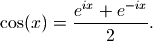
The inverse trigonometric functions are multivalued, thus requiring branch cuts, and are generally real-valued only on a part of the real line. Definitions and branch cuts are given in the documentation of each function. The branch cut conventions used by mpmath are essentially the same as those found in most standard mathematical software, such as Mathematica and Python’s own cmath libary (as of Python 2.6; earlier Python versions implement some functions erroneously).
Degree-radian conversion (degrees(), radians())¶
- mpmath.functions.degrees(x)¶
Converts the radian angle
 to a degree angle:
to a degree angle:>>> from mpmath import * >>> mp.dps = 15 >>> print degrees(pi/3) 60.0
- mpmath.functions.radians(x)¶
Converts the degree angle
to radians:>>> from mpmath import * >>> mp.dps = 15 >>> print radians(60) 1.0471975511966
Trigonometric functions (cos(), sin(), tan(), sec(), csc(), cot())¶
- mpmath.functions.cos(x, **kwargs)¶
Computes the cosine of
, 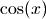.>>> from mpmath import * >>> mp.dps = 25 >>> print cos(pi/3) 0.5 >>> print cos(100000001) -0.9802850113244713353133243 >>> print cos(2+3j) (-4.189625690968807230132555 - 9.109227893755336597979197j) >>> print cos(inf) nan >>> nprint(chop(taylor(cos, 0, 6))) [1.0, 0.0, -0.5, 0.0, 4.16667e-2, 0.0, -1.38889e-3] >>> print cos(mpi(0,1)) [0.540302305868139717400936602301, 1.0] >>> print cos(mpi(0,2)) [-0.41614683654714238699756823214, 1.0]
- mpmath.functions.sin(x, **kwargs)¶
Computes the sine of
, 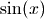.>>> from mpmath import * >>> mp.dps = 25 >>> print sin(pi/3) 0.8660254037844386467637232 >>> print sin(100000001) 0.1975887055794968911438743 >>> print sin(2+3j) (9.1544991469114295734673 - 4.168906959966564350754813j) >>> print sin(inf) nan >>> nprint(chop(taylor(sin, 0, 6))) [0.0, 1.0, 0.0, -0.166667, 0.0, 8.33333e-3, 0.0] >>> print sin(mpi(0,1)) [0.0, 0.841470984807896506652502331201] >>> print sin(mpi(0,2)) [0.0, 1.0]
- mpmath.functions.tan(x, **kwargs)¶
Computes the tangent of
, 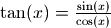.
The tangent function is singular at 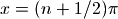, but
tan(x) always returns a finite result since 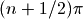
cannot be represented exactly using floating-point arithmetic.>>> from mpmath import * >>> mp.dps = 25 >>> print tan(pi/3) 1.732050807568877293527446 >>> print tan(100000001) -0.2015625081449864533091058 >>> print tan(2+3j) (-0.003764025641504248292751221 + 1.003238627353609801446359j) >>> print tan(inf) nan >>> nprint(chop(taylor(tan, 0, 6))) [0.0, 1.0, 0.0, 0.333333, 0.0, 0.133333, 0.0] >>> print tan(mpi(0,1)) [0.0, 1.55740772465490223050697482944] >>> print tan(mpi(0,2)) # Interval includes a singularity [-inf, +inf]
- mpmath.functions.sec(x)¶
Computes the secant of
, 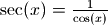.
The secant function is singular at , but
sec(x) always returns a finite result since
cannot be represented exactly using floating-point arithmetic.>>> from mpmath import * >>> mp.dps = 25 >>> print sec(pi/3) 2.0 >>> print sec(10000001) -1.184723164360392819100265 >>> print sec(2+3j) (-0.04167496441114427004834991 + 0.0906111371962375965296612j) >>> print sec(inf) nan >>> nprint(chop(taylor(sec, 0, 6))) [1.0, 0.0, 0.5, 0.0, 0.208333, 0.0, 8.47222e-2] >>> print sec(mpi(0,1)) [1.0, 1.85081571768092561791175324143] >>> print sec(mpi(0,2)) # Interval includes a singularity [-inf, +inf]
- mpmath.functions.csc(x)¶
Computes the cosecant of
, 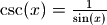.
This cosecant function is singular at 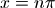, but with the
exception of the point  , csc(x) returns a finite result
since 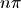 cannot be represented exactly using floating-point
arithmetic.
, csc(x) returns a finite result
since 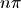 cannot be represented exactly using floating-point
arithmetic.>>> from mpmath import * >>> mp.dps = 25 >>> print csc(pi/3) 1.154700538379251529018298 >>> print csc(10000001) -1.864910497503629858938891 >>> print csc(2+3j) (0.09047320975320743980579048 + 0.04120098628857412646300981j) >>> print csc(inf) nan >>> print csc(mpi(0,1)) # Interval includes a singularity [1.18839510577812121626159945235, +inf] >>> print csc(mpi(0,2)) [1.0, +inf]
- mpmath.functions.cot(x)¶
Computes the cotangent of
,
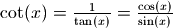.
This cotangent function is singular at , but with the
exception of the point , cot(x) returns a finite result
since cannot be represented exactly using floating-point
arithmetic.>>> from mpmath import * >>> mp.dps = 25 >>> print cot(pi/3) 0.5773502691896257645091488 >>> print cot(10000001) 1.574131876209625656003562 >>> print cot(2+3j) (-0.003739710376336956660117409 - 0.9967577965693583104609688j) >>> print cot(inf) nan >>> print cot(mpi(0,1)) # Interval includes a singularity [0.642092615934330703006419986575, +inf] >>> print cot(mpi(1,2)) [-inf, +inf]
Trigonometric functions with modified argument (cospi(), sinpi())¶
- mpmath.functions.cospi(x, **kwargs)¶
Computes
 , more accurately than the expression
cos(pi*x):
, more accurately than the expression
cos(pi*x):>>> from mpmath import * >>> mp.dps = 15 >>> print cospi(10**10), cos(pi*(10**10)) 1.0 0.999999999997493 >>> print cospi(10**10+0.5), cos(pi*(10**10+0.5)) 0.0 1.59960492420134e-6
- mpmath.functions.sinpi(x, **kwargs)¶
Computes
 , more accurately than the expression
sin(pi*x):
, more accurately than the expression
sin(pi*x):>>> from mpmath import * >>> mp.dps = 15 >>> print sinpi(10**10), sin(pi*(10**10)) 0.0 -2.23936276195592e-6 >>> print sinpi(10**10+0.5), sin(pi*(10**10+0.5)) 1.0 0.999999999998721
Inverse trigonometric functions (acos(), asin(), atan(), asec(), acsc(), acot())¶
- mpmath.functions.acos(x, **kwargs)¶
Computes the inverse cosine or arccosine of
, 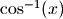.
Since 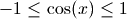 for real , the inverse
cosine is real-valued only for  . On this interval,
acos() is defined to be a monotonically decreasing
function assuming values between 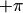 and .
. On this interval,
acos() is defined to be a monotonically decreasing
function assuming values between 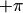 and .Basic values are:
>>> from mpmath import * >>> mp.dps = 25 >>> print acos(-1) 3.141592653589793238462643 >>> print acos(0) 1.570796326794896619231322 >>> print acos(1) 0.0 >>> nprint(chop(taylor(acos, 0, 6))) [1.5708, -1.0, 0.0, -0.166667, 0.0, -7.5e-2, 0.0]
acos() is defined so as to be a proper inverse function of 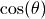 for 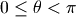. We have 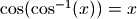 for all
, but
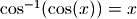 only for 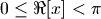:>>> for x in [1, 10, -1, 2+3j, 10+3j]: ... print cos(acos(x)), acos(cos(x)) ... 1.0 1.0 (10.0 + 0.0j) 2.566370614359172953850574 -1.0 1.0 (2.0 + 3.0j) (2.0 + 3.0j) (10.0 + 3.0j) (2.566370614359172953850574 - 3.0j)
The inverse cosine has two branch points: 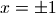. acos() places the branch cuts along the line segments 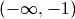 and 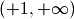. In general,
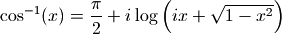
where the principal-branch log and square root are implied.
- mpmath.functions.asin(x, **kwargs)¶
Computes the inverse sine or arcsine of
, 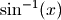.
Since 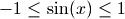 for real , the inverse
sine is real-valued only for .
On this interval, it is defined to be a monotonically increasing
function assuming values between 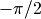 and  .
.Basic values are:
>>> from mpmath import * >>> mp.dps = 25 >>> print asin(-1) -1.570796326794896619231322 >>> print asin(0) 0.0 >>> print asin(1) 1.570796326794896619231322 >>> nprint(chop(taylor(asin, 0, 6))) [0.0, 1.0, 0.0, 0.166667, 0.0, 7.5e-2, 0.0]
asin() is defined so as to be a proper inverse function of
 for 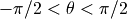.
We have 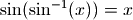 for all , but
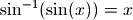 only for 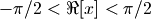:
for 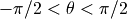.
We have 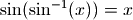 for all , but
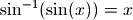 only for 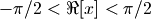:>>> for x in [1, 10, -1, 1+3j, -2+3j]: ... print chop(sin(asin(x))), asin(sin(x)) ... 1.0 1.0 10.0 -0.5752220392306202846120698 -1.0 -1.0 (1.0 + 3.0j) (1.0 + 3.0j) (-2.0 + 3.0j) (-1.141592653589793238462643 - 3.0j)
The inverse sine has two branch points: . asin() places the branch cuts along the line segments and . In general,
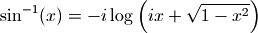
where the principal-branch log and square root are implied.
- mpmath.functions.atan(x, **kwargs)¶
Computes the inverse tangent or arctangent of
, 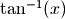.
This is a real-valued function for all real , with range
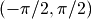.Basic values are:
>>> from mpmath import * >>> mp.dps = 25 >>> print atan(-inf) -1.570796326794896619231322 >>> print atan(-1) -0.7853981633974483096156609 >>> print atan(0) 0.0 >>> print atan(1) 0.7853981633974483096156609 >>> print atan(inf) 1.570796326794896619231322 >>> nprint(chop(taylor(atan, 0, 6))) [0.0, 1.0, 0.0, -0.333333, 0.0, 0.2, 0.0]
The inverse tangent is often used to compute angles. However, the atan2 function is often better for this as it preserves sign (see atan2()).
atan() is defined so as to be a proper inverse function of 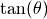 for . We have 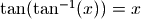 for all
, but
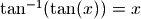 only for :>>> mp.dps = 25 >>> for x in [1, 10, -1, 1+3j, -2+3j]: ... print tan(atan(x)), atan(tan(x)) ... 1.0 1.0 10.0 0.5752220392306202846120698 -1.0 -1.0 (1.0 + 3.0j) (1.000000000000000000000001 + 3.0j) (-2.0 + 3.0j) (1.141592653589793238462644 + 3.0j)
The inverse tangent has two branch points: 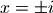. atan() places the branch cuts along the line segments 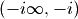 and 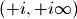. In general,
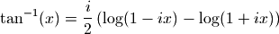
where the principal-branch log is implied.
- mpmath.functions.asec(x)¶
- Computes the inverse secant of ,
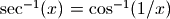.
- mpmath.functions.acsc(x)¶
- Computes the inverse cosecant of ,
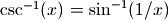.
- mpmath.functions.acot(x)¶
- Computes the inverse cotangent of ,
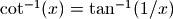.
Sinc function (sinc(), sincpi())¶
- mpmath.functions.sinc(*args, **kwargs)¶
sinc(x) computes the unnormalized sinc function, defined as

See sincpi() for the normalized sinc function.
Simple values and limits include:
>>> from mpmath import * >>> mp.dps = 15 >>> print sinc(0) 1.0 >>> print sinc(1) 0.841470984807897 >>> print sinc(inf) 0.0
The integral of the sinc function is the sine integral Si:
>>> print quad(sinc, [0, 1]) 0.946083070367183 >>> print si(1) 0.946083070367183
- mpmath.functions.sincpi(*args, **kwargs)¶
sincpi(x) computes the normalized sinc function, defined as

Equivalently, we have
 .
.The normalization entails that the function integrates to unity over the entire real line:
>>> from mpmath import * >>> mp.dps = 15 >>> print quadosc(sincpi, [-inf, inf], period=2.0) 1.0
Like, sinpi(), sincpi() is evaluated accurately at its roots:
>>> print sincpi(10) 0.0